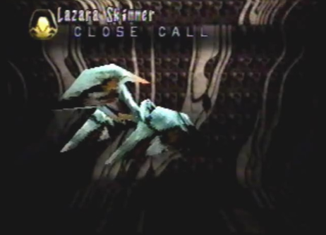
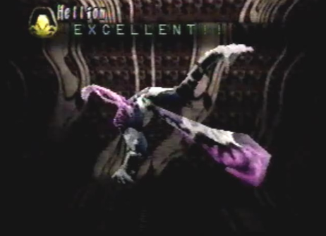

Lazara Hunting
Group |
Lazara
|
Lazara Skimmer  |
Strategy No matter where we positioned ourselves, whether it was the front, back or sides of these creatures, we would be attacked by their laser fire. Our best bet was to attack from behind with the dragon's laser fire. This took out the 4 Lazara Skimmers, leaving the 4 Lazara in front, open for attack. The dragon continued his bombardment of lasers until they were all defeated. |

Hellion  |
Strategy These creatures hovered beside a giant sphere, shifting there location around it, every so often. When we encountered them, they immediately shot stone slashers at us. The dragon transformed into his Spiritual form and took them out with his Cleansing Wave berserk attack. |
Divine Enemy Info
Normal/Attack Direction None Special Stone Slasher/ALL |
Length 13.5 Ln Height 10.8 Ln Width 9.0 Ln Weight 448 Kn Dynes 35 Dn Exp Pts 33 EXP Items Feener Armor Lickuern Eyes |
Shellcoof Guardians
|
Strategy These Ancient Age robots hovered around the massive tornado repairing the ancient ship within and warding of any intruders that may halt the ships restoration. These guardians or repair robots, shot particle charged lasers out of the lower parts of their bodies. They were fairly easy to destroy. The dragon only had to lock-on to any one guardian and shoot a single laser, destroying it in one hit. |